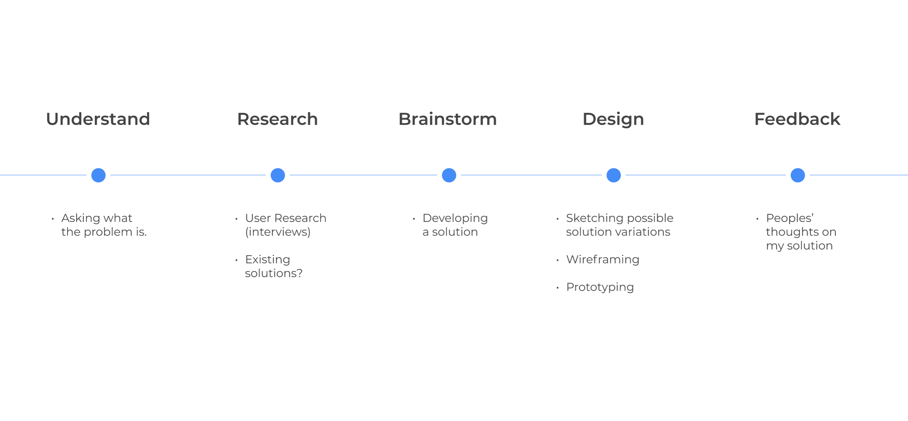

I am not associated with Zoom in any way.
| Project Type | Concept Project |
| Timeline | 2021 (2 weeks) |
| Device | Desktop |
| Final Product | Prototype |
My Dilemma.
Recently, I went to a drop-in office hour to get help from a TA (Teaching Assistant). I remember being in the waiting room for a long time. Although other drop-in office hours were open, I was hesitant to leave the waiting room.
I was hesitant to leave because I convinced myself that I was near the front of the line. As such, if I wait a bit longer, I would likely be admitted. On the other hand, If I left, I would have wasted time. Plus, there was no guarantee the other TA waiting rooms were not crowded, which meant I have to spend more time waiting.
“How might I make the waiting room more tolerable during crowded drop-in hours?”
The Process.
Why the current waiting room is bad.

How many people before me? How long will I have to wait? These questions do not get answered, so I am stuck in the waiting room hesitant to leave.
17 others agree with me.
I interviewed 17 classmates and other people who partake in crowded drop-in office hours/meetings. I then summarized the results.
- The waiting room adds pressure to students whose stress levels are already high. By spending a lot of time waiting, students fear they will never get the help they need to succeed in class.
- Students want to make decisions (stay and wait or go to another room). However, the current waiting room makes these decisions difficult because students lack the necessary information.
Checking for existing solutions.
Before I started designing, I wanted to be sure there was no existing solution that would give drop-in office hour attendees the information to make decisions in the waiting room.

However, after extensive exploration of the internet and the software itself, I came to the conclusion that there were no settings or hidden features that Zoom has that would address the problem.
Proposed Solution.
Modify the participant's view of the waiting room to show the number of people in the waiting room and the participant's place in the queue while keeping all participants anonymous.
Sketching.

Wireframing.

I chose to use a toggle bar to separate the meeting messages and participants because during my exploration of the Zoom software, I noticed that the toggle bar was frequently used to keep two different functions separated.

New waiting room concept uses the toggle bar to display the number of participants in the waiting room. Additionally, there is also a visual representation of the queue and a participant's place in line. Anonymity is also maintained.
Prototyping.

Improved Zoom waiting room meeting messages tab

Improved Zoom waiting room participants tab
User Feedback.
So, what did other students think about my modifications to Zoom’s waiting room?
“Definitely solves my anxiety.”
“This is more than enough and makes the waiting room much more endurable.”
“Now that it (the waiting room) is usable in drop-in meetings, perhaps hosts would use it rather than trying to avoid it.”
“This is great! I can finally feel good about leaving a waiting room.”
Takeaways.
Before designing a solution for a product, check for an existing solution. Although other people and I have the same problem, we may have overlooked hidden settings that offer a solution. If that were true, my priority would be to redesign that setting to be more noticeable.
Even though my research of the Zoom app showed no existing solution, knowing more about the product helped me create a solution consistent with existing design choices (such as usage of the toggle bar).
Next up: